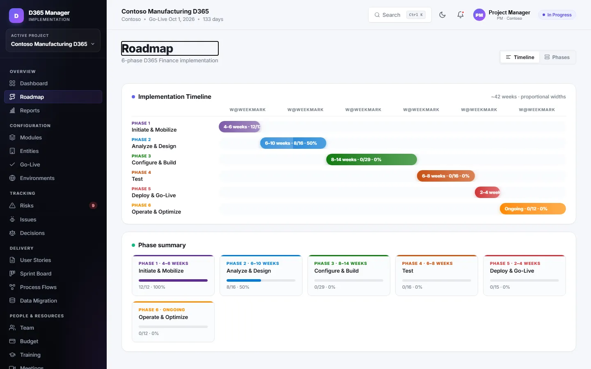
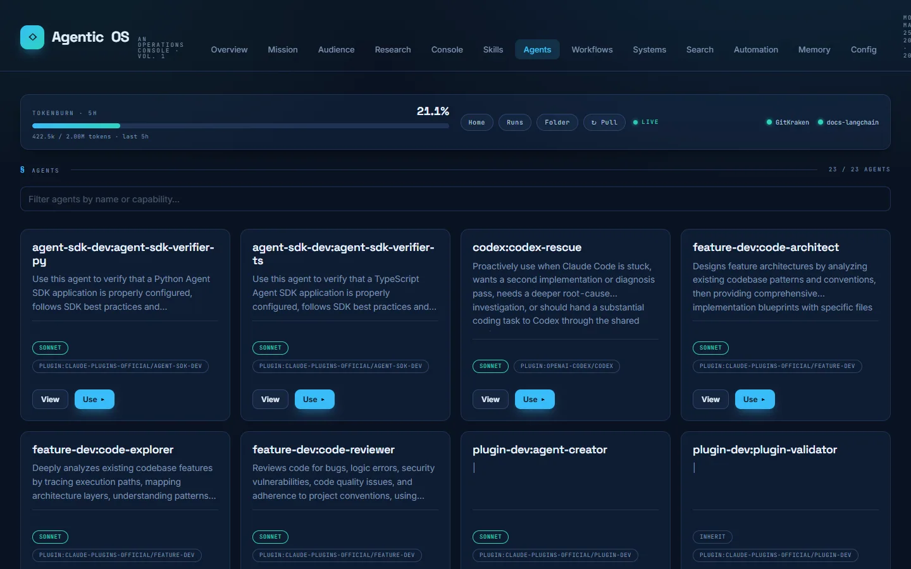
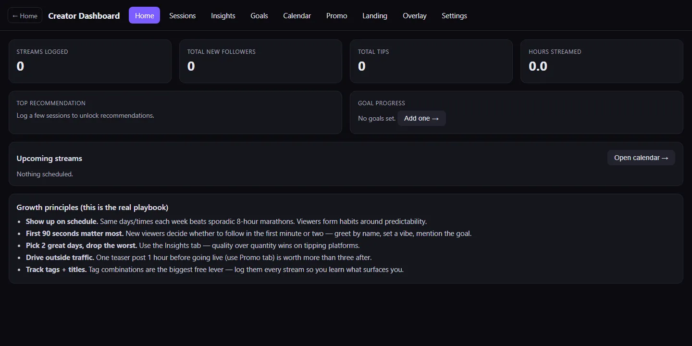
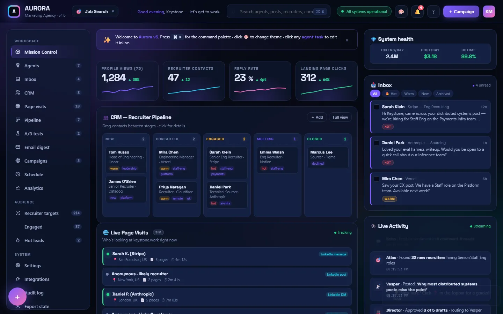
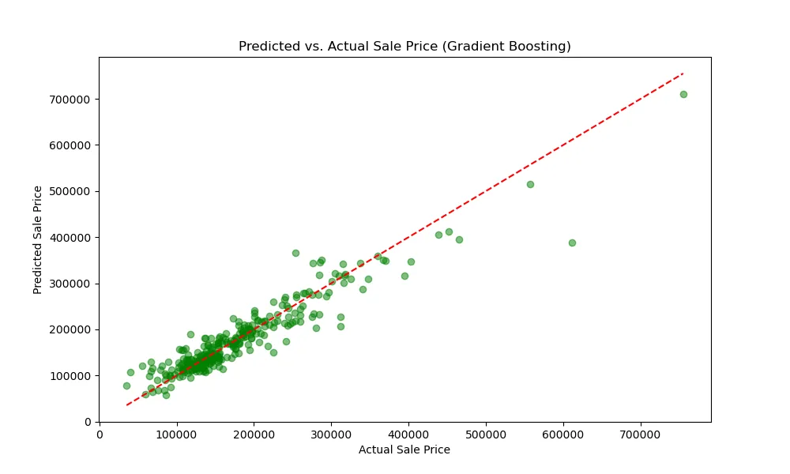

Selected work
Things I've built.
Finance tooling, AI systems, and apps I've designed and shipped — each one solving a real reporting or workflow gap. Click any project for the full walkthrough.
D365 / BLAZOR / .NET 8
D365 ERP Manager Web

Every D365 F&O rollout reinvents the same planning spreadsheets. This Blazor app generates implementation timelines, project templates, and user stories on demand — reusable tooling that replaces the per-engagement spreadsheet rebuild.
NEXT.JS / FASTAPI / CREWAI
Codex Job Tracking App

Job hunting is fragmented across boards, inboxes, and trackers. This full-stack command center aggregates listings, ranks fit with OpenAI, tailors résumés, watches Gmail & Outlook for recruiter replies, and runs approval-gated auto-apply via Playwright — a CrewAI multi-agent system that runs the search end-to-end.
PYTHON / AGENT OPS
Agentic OS Dashboard

AI automations sprawl across tools with no single view. This self-built operations console surfaces every agent, workflow, and skill in one place — real observability for an AI-driven operation.
HTML / VANILLA JS
Creator Dashboard

Creators juggle scheduling, links, and analytics across half a dozen apps. This single-file shell app pulls scheduling, link-in-bio, analytics, and promo tools together — one lightweight cockpit, zero backend.
VANILLA JS / MULTI-AGENT
Aurora — Marketing Agency

Personal-brand marketing means juggling content, outreach, and analytics by hand. Aurora runs a roster of autonomous agents that plan campaigns, work a recruiter CRM, and track engagement from one mission control — a self-driving marketing agency in a single file.
DATA SCIENCE / SCIKIT-LEARN / XGBOOST
Housing-Price ML Models

Which model actually predicts home prices best? Compared XGBoost, Gradient Boosting, and Linear Regression head-to-head with full feature engineering and EDA — predicted-vs-actual diagnostics that pick the winning model.